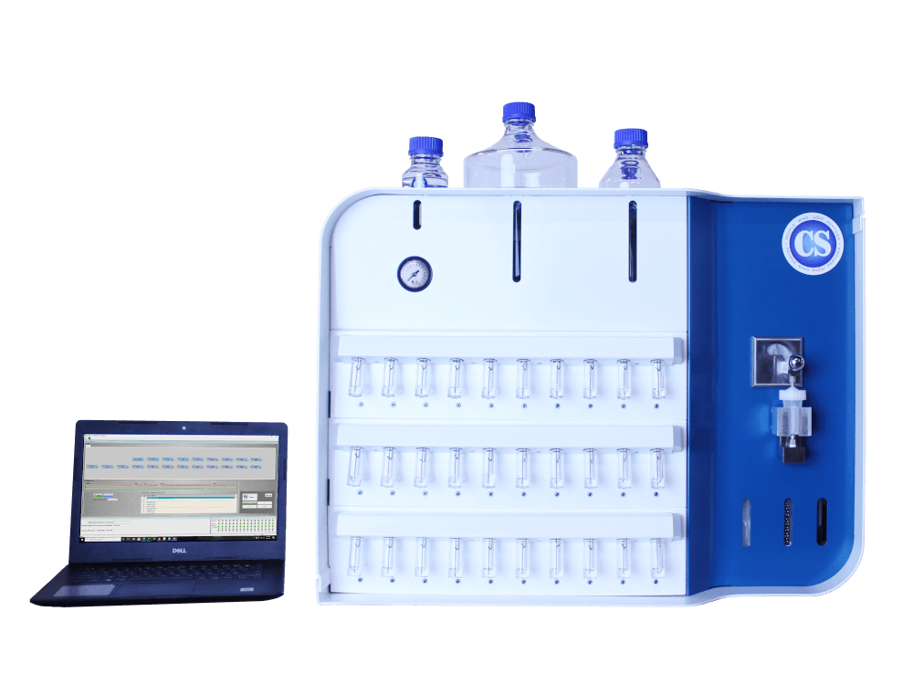
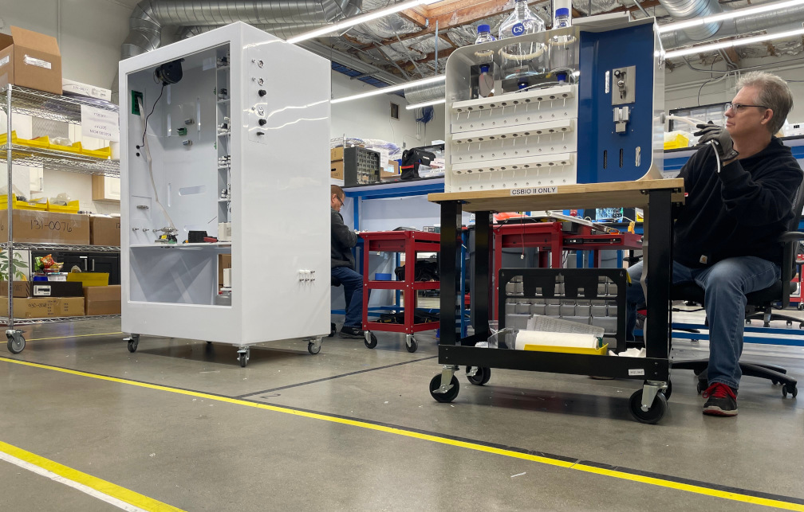
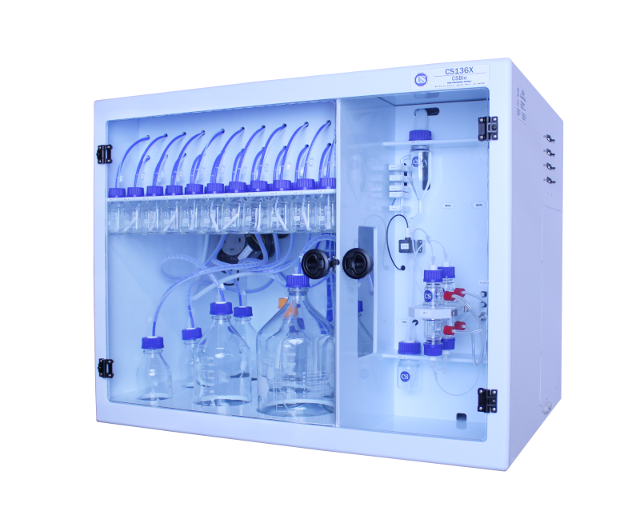
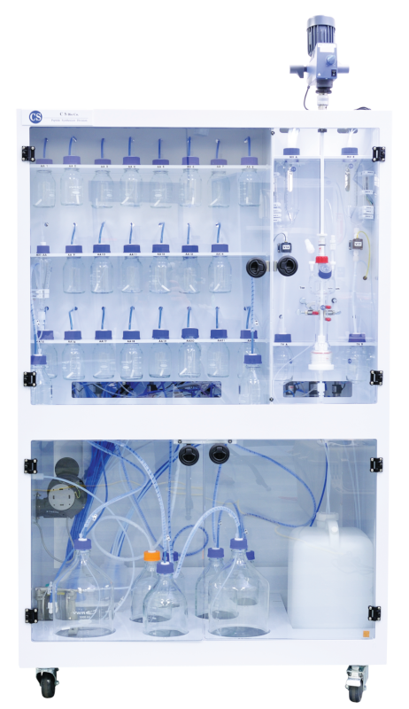
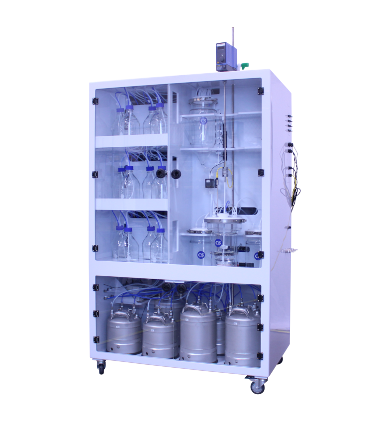
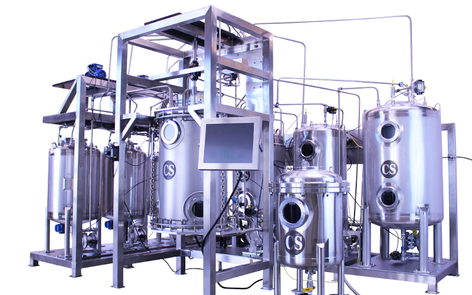

CSBio II
A compact, fully automated peptide synthesizer for labs that want to bring research-scale peptide synthesis in-house.
View CSBio IIResearch, pilot, clinical, and commercial-scale peptide synthesis equipment from CSBio.
Since 1993, CSBio has designed and manufactured peptide synthesizers for universities, biotech companies, CDMOs, and pharmaceutical manufacturers worldwide.
CSBio designs and manufactures automated peptide synthesizers for solid phase peptide synthesis (SPPS), supporting labs as they move from first research batches to process development, GMP-ready clinical production, and custom commercial-scale manufacturing.
Designing and manufacturing automated peptide synthesis instruments.
Systems installed across academic, biotech, pharma, and CDMO labs.
Benchtop and R&D systems for automated peptide synthesis.
Custom automated systems for large-scale peptide manufacturing.

Designed by people who know peptides, CSBio combines peptide chemistry experience with instrumentation design, software, fluid handling, and manufacturing expertise. Our systems are built to support practical peptide synthesis workflows, not just generic liquid handling.
Start with synthesis scale, throughput, and where the work fits in your peptide lifecycle. Each CSBio system links to a detailed page with specifications and configuration options.
| Need | Recommended systems | Typical use | Learn more |
|---|---|---|---|
| Benchtop research automation | CSBio II | Automating routine research-scale peptide synthesis in a compact lab footprint. | CSBio II |
| Flexible R&D and process development | CS136X | 20 mL to 200 mL reaction vessels, flexible chemistry, and up to 3 reaction vessels. | CS136X |
| Parallel research synthesis | CS136M | Six reaction vessels for high-throughput small-scale peptide synthesis. | CS136M |
| Process development and scale-up | CS536X | Pilot-scale single-batch peptide synthesis with configurable process-development options. | CS536X |
| Clinical-stage and GMP-ready pilot production | CS936S | 2 L to 10 L platform for robust pilot scale peptide synthesis and clinical production. | CS936S |
| Commercial peptide manufacturing | CS936 or CS936X | 10 L to 1000 L fully automated peptide synthesizers tailored to your workflow and facility. | Commercial scale |

A compact, fully automated peptide synthesizer for labs that want to bring research-scale peptide synthesis in-house.
View CSBio II
A flexible research-scale platform for R&D, process development, and small-scale manufacturing.
View CS136X
A six-reaction-vessel parallel peptide synthesizer for higher throughput research and small-scale production.
View CS136M
A pilot-scale automated peptide synthesizer for process development, scale-up, and medium-scale production needs.
View CS536X
A 2 L to 10 L platform for process development and GMP-ready clinical-stage peptide production.
View CS936S
Custom fully automated commercial-scale peptide synthesizers for GMP manufacturing from 10 L to 1000 L.
View commercial systemsA good peptide synthesizer decision starts with the work you need the system to perform: discovery, method development, scale-up, clinical production, or commercial manufacturing.
Read the detailed guideMatch vessel size, resin loading, and output needs to research, pilot, or commercial production.
Decide whether you need one robust synthesis path or parallel reaction vessels for multiple peptides.
Consider temperature control and preheated solvent delivery for synthesis speed and peptide crude purity
Confirm support for your coupling chemistry, custom protocols, selective capping, and method development needs.
For scale-up or process development, consider UV, refractive index, temperature control, and PAT feedback automation.
For clinical or commercial work, plan around software, documentation, facility integration, and long-term support.
CSBio platforms are configurable because peptide synthesis needs vary by sequence, chemistry, scale, throughput, and manufacturing environment.
Build or select protocols, assign chemistries, and automate deprotection, washing, coupling, and repeat cycles.
Options include heated reaction vessels, preheated solvent delivery, and temperature-controlled scale-up workflows.
Research systems use inversion mixing and nitrogen bubbling, while larger systems use overhead stirring for consistent scale-up.
Pilot and commercial systems can be configured for process analytical technologies including UV, RI, and Raman integration.
Options such as solvent recycling, flowthrough technology, and percolation washing can support waste reduction and lower raw material costs.
Large-scale systems can be tailored to facility layout, process needs, vessel size, solvent handling, automation, and documentation requirements.
For detailed technical information, use CSBio’s resource library. These links support visitors who are comparing systems, learning SPPS, or planning scale-up.
A guide for users comparing popular automated peptide synthesizers and choosing a system that fits their needs.
Read guideA detailed SPPS introduction with practical guidance for avoiding common synthesis issues.
Read guideA video mini-course covering amino acids, peptide bonds, activation chemistry, resin types, and the synthesis cycle.
Start courseA comparison of microwave and conduction heating approaches for solid phase peptide synthesis.
Read comparisonAn introduction to UV, refractive index, and Raman tools for monitoring peptide synthesis processes.
Read resourceA case study on how conduction preheating can improve synthesis speed and crude peptide purity.
Read case studyCommon questions for new users comparing peptide synthesis equipment.
A fully automated peptide synthesizer automates the repeated synthesis cycle for each amino acid, including deprotection, washing, coupling, and washing steps. For research-scale systems, this typically means the instrument can complete an entire peptide sequence without user intervention once the method is started.
For larger pilot and commercial-scale systems, the level of automation can depend on system size and process requirements. A 1000 L commercial-scale system may automate the full synthesis cycle for each amino acid, while still requiring operator intervention between couplings for material handling, charging, sampling, or process checks. Mid-scale systems generally fall somewhere between these two approaches.
When comparing peptide synthesizers, it is important to confirm what is actually automated. Some systems or accessories may automate only part of the process, such as heating or the coupling step, while a fully automated peptide synthesizer is designed to control the full SPPS cycle.
For research-scale peptide synthesis, the right CSBio system depends on how much flexibility, throughput, and process control the user needs. The CSBio II is the most compact, plug-and-play option. It is designed for users who want to make peptides at smaller scales with minimal setup, using preloaded protocols and straightforward operation.
The CS136X is a more flexible research and process development platform. It is better suited for users who want to adjust chemistry, develop methods, optimize protocols, support scale-up work, or begin moving toward small-batch GMP manufacturing.
The CS136M is designed for higher-throughput peptide production, such as groups making 50 or more different peptides per month around the 0.2 mmol scale. It is not typically the best fit for users focused on process development, scale-up, or frequent changes to chemistries and protocols across different peptides.
The difference between research, pilot, and commercial scale is largely based on the intended use case and the quantity of peptide being produced per batch. Research-scale systems are typically used for discovery, small-scale manufacturing, and early process development.
Pilot-scale systems are generally used for later-stage process development, scale-up, and clinical production. Commercial-scale systems are designed for clinical-stage production through full commercial manufacturing, with the level of automation, documentation, and facility integration matched to the production environment. Process development needs also depend on the final manufacturing scale.
CSBio designs each system around its intended application: the CSBio II is a research-scale, plug-and-play system with preloaded protocols, while custom commercial-scale systems are engineered with more extensive documentation, facility integration, and process integration requirements.
Yes. CSBio systems can be configured to support GMP manufacturing requirements, with the exception of the CSBio II, which is designed as a compact research-scale, plug-and-play peptide synthesizer.
For GMP applications, CSBio can provide options for documentation, software, automation, controls, materials of construction, and system configuration depending on the intended use case. Pilot and larger-scale systems can support process development, scale-up, clinical production, and commercial manufacturing.
Commercial-scale systems typically include more options for facility integration and process integration. CSBio offers standard options across its system platforms, custom options on standard systems, and fully custom build-to-order peptide synthesizers for applications that require a facility-specific design.
Tell us your synthesis scale, throughput needs, chemistry, software requirements, and production goals. CSBio can help identify the right automated peptide synthesis platform.
Request Synthesis Equipment Schedule a CallCSBio is a leading peptide instrumentation manufacturing company located in Silicon Valley, California.
CSBio provides research scale peptide synthesizers, pilot scale peptide synthesizers, commercial scale peptide synthesizers, and DNA/RNA oligonucleotide synthesizers.